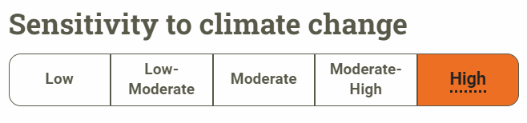

About
Washington Department of Fish and Wildlife: Pygmy Rabbit
The Pygmy Rabbit is extremely vulnrable to climate change. Increasing temperatures has resulted in forest fires that threaten to destroy more of the Pygmy's territory
The Pygmy Rabbit is extremely vulnrable to climate change. Increasing temperatures has resulted in forest fires that threaten to destroy more of the Pygmy's territory